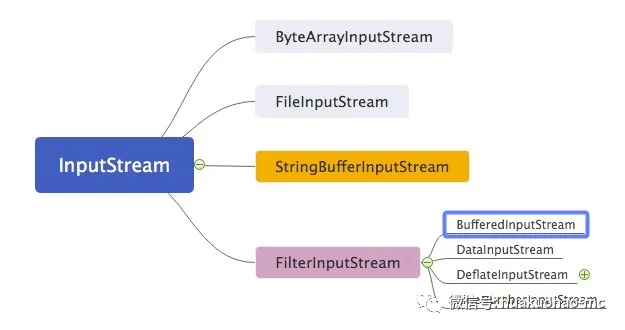

这是一篇写给新手的I/O学习文章，如果你对Java I/O库已经很熟悉了，就不要浪费时间看了。
Java的I/O流，说简单也简单，说复杂也复杂。说复杂是因为进行一次常规的文件I/O操作通常要用到很多I/O基础类，这很容易让新手产生困惑。说他简单是因为它的设计思想其实很简单。只要理解了它的设计思想就很容易知道如何使用他们。
Java的I/O类库最基本的思想就是流的概念。你可以把它类比成水流，我们把数据从一个地方搬运到另一个地方就是一次I/O操作。比如读取文件 ‘A’ 的内容，存入文件 ‘B’ 就是一次文件I/O操作; 通过监听键盘输入，然后将内容存储到磁盘上也是一次I/O操作; 当然通过网络带宽把服务器 ‘A’ 的内容发送到 ‘B’ 服务也叫做一次I/O操作。
Java的I/O流分为输入流和输出流。跟读相关的都叫输入流，跟写相关的都叫输出流。Java的I/O不光分为输入流跟输出流，按照流的性质还分为字节流和字符流。所有继承自抽象类InputStream和OutPutStream的流都是字节流，所有继承自抽象类Reader和Writer的流都是字符流。这两种不同性质的流都能进行I/O操作。
为什么要分为字节流跟字符流。
所谓的字节流，就是里面流淌的都是字节，也就byte。字符流呢，里面流淌的就是字符，也就是char。字符是由字节通过特定的编码组成的，比如GBK编码，ASCII编码等等。同样的字节，使用不同的编码得到的内容可能不一样，这也就是编程中经常遇到的乱码问题。关于字符编码问题，这里不做深入展开，后续有机会可以单独写一下。
JDK最开始支持的都是字节流，因为计算机就认字节。但是计算机是为人服务的，我们更喜欢看字符，比如‘A’，‘B’，‘C’，‘中’，‘国’，这些都叫字符。如果我们每次按字节I/O读取内容，然后在展示出来，是需要做编码转化的，所以为了方便程序员使用，JDK增加了字符流的相关类库，JDK底层帮我们完成转换工作。
新的字符类库继承体系相比于老得字节流继承体系，有如下增强，支持国际化也就是支持16位的Unicode字符，老得I/O流仅支持8位的的字节流，而且在性能上也会有一定提升。在进行I/O操作的时候，应该优先使用字符流，当字符流不能满足我们的时候，才转化到字节流，比如进行GZIP操作的时候，就需要使用字节流。
字节流I/O
先来认识一下字节流的I/O类库。
所有的跟输入相关的字节流都继承自InputStream。这是一个抽象类。它有几个比较常用的直接子类，每个直接子类代表了一个数据源，比如 ByteArrayInputStream 表示将内存缓冲区中的字节数组当作输入源。 StringBufferInputStreamString对象作为输入源，现在已经不推荐使用了，推荐使用StringReader读取String对象。后面介绍字符流的时候还会说到这个类。FileInputStream 表示将文件作为数据源，这也是大家平时用的比较多的。
这些类的继承关系大概是这个样子
其中标红的直接子类FilterInputStream比较特殊。要想理解这个类存在的意义，需要对装饰者模式有一定了解。
俗话说的好，光说不练假把式，下面来看个小例子，看看如何进行字节流的文件I/O操作。1
2
3
4
5
6
7
8
9
10
11
12
13
14
15
16
17
18try {
//打开输入流
InputStream in = new FileInputStream(new File("test-io.tmp"));
//打开输出流
OutputStream out = new FileOutputStream(new File("test-io.md"));
int length;
byte[] buffer = new byte[1024];
//输入流不断的读取，每次读取1024字节，直到文件末尾。
while ((length = in.read(buffer)) != -1) {
out.write(buffer,0,length);
}
in.close();
out.close();
} catch (FileNotFoundException e) {
e.printStackTrace();
} catch (IOException e) {
e.printStackTrace();
}
在真正的项目中很少看到这样的I/O操作，因为效率比较低。都2020年了，要是还进行非缓冲的I/O 操作，估计会被同行狠狠的鄙视。我们针对上面的例子做一个小小的改动，使其变成带缓冲功能的I/O操作。主要的类就是BufferedInputStream.
看代码
1 | try { |
装饰者模式的应用
上面这段带缓存功能的I/O操作跟不带缓存的I/O操作唯一的区别就是把FileInputStream用BufferedInputStream给包装（装饰）了一下。下面看一下BufferedInputStream的继承关系。

FileterInputStream：JDK官方文档是这样介绍这个类的。
把一个真正的带有数据源的输入流包装进来，并为其提供格外的功能，这个额外的功能要其子类去实现。
这是典型的装饰者模式。
大家可能会问，为什么不能直接让BufferedInputStream继承自FileInputStream,而偏偏引入个装饰者模式呢。
我们假设让BufferedInputStream继承自FileInputStream，那么当需要对ByteArrayInputStream进行缓存读取的时候自然也需要在实现一个ByteBufferedInputStram,这样类库就会变得异常复杂跟臃肿。这也是装饰者模式比继承的方式更灵活的地方。如果你还是一头雾水的话，建议去深入的理解一下装饰者模式吧。
字节流的I/O操作基本就这样了，下面看一下字符流。
字符流I/O
所有跟输入相关的字符流都继承自抽象类Reader，跟输出相关的都继承自抽象类Writer。
我们先看个小例子，假设不使用字符流而是使用字节流读取文件内容，然后将内容输出到控制台，看看应该怎样操作。1
2
3
4
5
6
7
8
9
10
11
12
13
14
15
16
17
18
19
20
21
22
23
24
25public static void readFileStreamToChar(){
/**
* UTF-8编码英文字符占一个字节，
* 数字占一个字节，
* 有的汉字占三个字节，有的占用四个字节。
* 拉丁文，希腊文占两个字节。
*/
try {
InputStream in = new FileInputStream(new File("test-io.tmp"));
int length;
byte[] buffer = new byte[4];
while ((length = in.read(buffer)) != -1) {
System.out.println("the length of bytes is " + length);
//编码转化
String content = new String(buffer, 0, length, Charset.forName("utf-8"));
System.out.println("the content is " + content);
}
in.close();
} catch (FileNotFoundException e) {
e.printStackTrace();
} catch (IOException e) {
e.printStackTrace();
}
}
输出结果1
2
3
4
5
6
7the length of bytes is 4
the content is word
the length of bytes is 4
the content is
世
the length of bytes is 3
the content is 界
说明：
（没拼错,故意找的这个单词）,第二行内容是'世界'
2
3
4
5
6
7
8
9
10
11
12
13
14
15
16
17
18
19
20
21
22
23
24
25
26
27
28
29
30
31
32
33
34
35
36
37
38
39
40
41
42
43
44
45
46
47
48
49
50
51
52
从代码中可以看到，将内容输出到控制台的时候必须进行编码转换。大家可以尝试把`buffer`的大小调整为2个字节看一下效果。懒得尝试的同学，就别试了，结论是中文字符会乱码，原因我已经在代码注释中说了，一个中文字符占三个字节。
假设JDK只提供基于字节流操作，那么每次都要进行字节到字符的转换操作，很麻烦，所以JDK就直接提供了字符流的操作。
下面来具体看看字符流类库的设计，我们还是以输入流举例，因为输出流跟输入流是一一对应关系。
抽象类`Reader`同样有几个比较常用的直接子类。
`BufferedReader`：带缓冲功能的字符流，用的比较多。
`CharArrayReader`：跟`ByteArrayInputStream`对应，读取内存中的字符数组。
`StringReader`：跟`StringBufferInputStream`对应，读取`String`对象，这是读取`String`对象的推荐用法。
`Reader` 有个比较特殊的直接子类，就是`InputStreamReader`。这是个适配器，可以把字节流转换为字符流。`FileReader`就继承自该类,`FileReader`跟字节流的`FileInputStream`对应，表示从文件读取字符。
下面来看简单看一下类的继承关系。

了解完类的继承关系之后，我们看个小例子，看看如何使用字符流的方式读取文件内容。注意我注释掉的代码。
```java
try {
//通过 InputStreamReader 适配器，将字节流FileInputStream按照制定的编码方式转换为字符流
// BufferedReader in = new BufferedReader(
// new InputStreamReader(
// new FileInputStream(
// new File("test-io.tmp")), "utf-8"));
//不直接使用适配器，使用FileReader,将使用系统默认的编码
BufferedReader in = new BufferedReader(new FileReader(new File("test-io.tmp")));
String s;
StringBuilder sb = new StringBuilder();
//按字符读
int value;
while ((value = in.read()) != -1) {
char c = (char) value;
System.out.println(c);
}
//按行读取
//while ((s = in.readLine()) != null){
// sb.append(s);
//}
//System.out.println(sb.toString());
in.close();
} catch (FileNotFoundException e) {
e.printStackTrace();
} catch (IOException e) {
e.printStackTrace();
}
}
Java的普通I/O就介绍到这里了。Java的I/O类库用到了两个经典设计模式，装饰器跟适配器。如果想更深入的理解Java I/O类库除了多读源码外（感兴趣的读者可以去看看底层源码，JDK如何实现字节到字符的转换的）还需要深入的理解设计模式。
希望这篇文章对你理解Java I/O有一定帮助，下一篇打算写一下Java的NIO。
推荐阅读:
1.这也许就是产品和开发互撕的本质原因吧
2.Java里面的String对象到底神奇在什么地方
3.Javaer运维指令合集(快餐版)